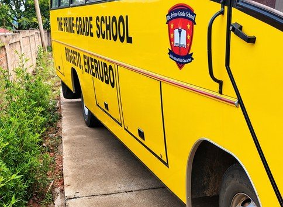
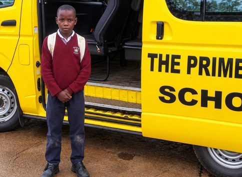

Pre-School
Playgroup, PP1 and PP2

Borabu, Nyamira County · Enrolment open for 2027
Education with Character
A place where every child grows in confidence and character. Enrol now for the 2027 academic year.
Academic pathways
Join a school with a new library, an IT room and an equipped laboratory, plus music, sport and hands-on projects.
Playgroup, PP1 and PP2
Grade 1 to Grade 6
Boarding for Grades 4 to 6.
Grade 7 to Grade 9
Boarding available.
Residence
New facilities include a modern ablution block, a kitchen and dining hall, and dormitories, with structured study time and closer academic support.

Beyond the classroom
From dedicated teaching to libraries, labs, clubs and transport — every part of school life is built to support learning and character.
A dedicated and committed team of qualified teachers and instructors provides caring, engaging teaching and individual attention. Through clear guidance and encouragement, we help each learner build confidence, make steady academic progress and develop character and talents.
Over 1,500 new books to feed young minds.
A fully functional computer room supporting hands-on digital learning, creativity and confident, responsible use of technology.
A well-equipped laboratory for hands-on science learning.
Practical, age-appropriate projects bring lessons to life, building creativity, problem-solving and everyday life skills.
Music, singing, dance and drama nurture expression; soccer builds fitness and teamwork. Young Farmers and Environmental clubs encourage practical skills and care for nature.
Safe school vans and buses to carry our children.
Campus moments





Who we are
The school’s motto is inspired by the proven belief that education without a solid foundation in character building is like a ship without a compass: equipped for a long journey, but lacking the moral direction to reach a worthy destination safely.
Guiding principles
Our foremost guiding principle: placing God at the heart of school life and nurturing faith, humility, compassion and respect for others.
Nurturing honesty, respect, responsibility and self-discipline alongside academic achievement.
Building literacy, numeracy, scientific understanding and critical thinking.
Connecting classroom learning with practical experience to develop creativity, problem-solving, personal organisation and independence.
Developing confident, creative and responsible use of computers and technology.
Fostering a love of books through an engaging library, while strengthening expression through storytelling, presentations and debate.
Recognising each learner’s strengths, supporting their learning and wellbeing, and developing their talents in music, drama, art and sport.
Building cooperation and leadership through group activities, age-appropriate responsibilities and service to others.
Encouraging care for our surroundings through gardening, tree planting and recycling.
Maintaining regular communication between school and home to support each child’s learning, character and wellbeing.
Prime Grade School: Shaping character, building knowledge and nurturing talent.
Admissions
Call or visit the school office to enrol for the 2027 academic year.